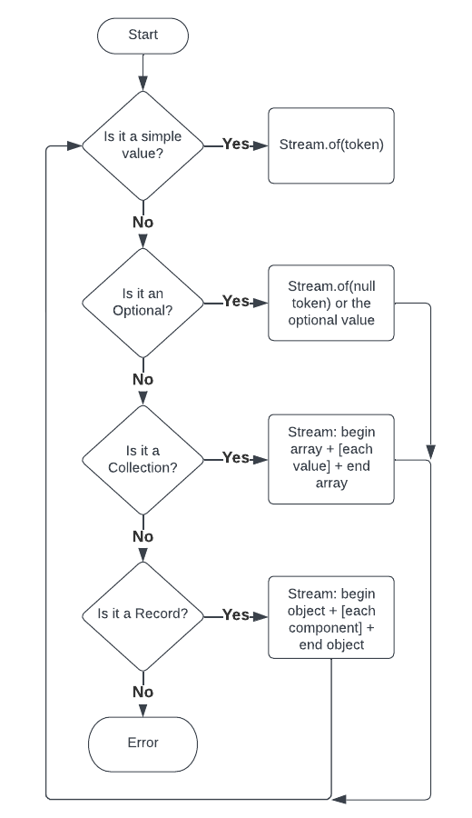

This is part 2 of the Bleeding edge Java series. Start at the introduction if you haven’t already.
Serializing a Java object is the process of taking the in-memory state of an object and translating it into a representation that can be stored. In this case, that representation is JSON. Now that we have a model for JSON tokens, our goal is to convert Java objects into a list of JSON tokens.
For simple Java objects such as primitives like int, boolean, etc.
or simple Java classes like String, this is straightforward. However,
serializing Java classes has traditionally been complicated. There is no
standard way to determine what the representative state of a Java class should
be. Most existing serialization libraries rely on annotations to help discover
what the state should be. Java records, however, now allow us to know what the
representation of a Java class should be without the need for extra-class
metadata such as annotations.
For the first version of our library, we limit the types that can be serialized only to Java instances that need no extra metadata to know what their storage representation should be:
- Primitives (
int,double, etc.) - Strings
- Enumerations (enumeration constants always have a name)
null- Records
Optionalof any of the aboveCollectionof any of the above
The general algorithm for our serializer is:
Java Object -> [token1, token2, ...]
We can define a Java interface for this:
public interface JsonSerializer
{
Stream<JsonToken> serialize(Object o);
}
It’s a deceptively simple declaration which literally says: “for an object return a stream of JSON tokens”. It’s also simple to write. Here’s our decision flow:

We can now code this flow using bleeding edge preview features of Java 19 - record patterns and pattern matching for switch:
public interface JsonSerializer
{
default Stream<JsonToken> serialize(Object o)
{
return switch (o) {
case null -> Stream.of(new NullToken());
case String str -> Stream.of(new StringToken(str));
case Number n -> Stream.of(new NumberToken(n));
case Boolean b -> Stream.of(new BooleanToken(b));
case Enum<?> e -> Stream.of(new StringToken(e.name()));
case Optional<?> optional -> serialize(optional.orElse(null));
case Collection<?> collection -> serializeCollection(collection);
case Object __ when o.getClass().isRecord() -> serializeRecord(o);
default -> throw new IllegalArgumentException(); // we don't support this type
};
}
}
We still need to define serializeCollection() and serializeRecord() but
let’s first describe what’s going on with the switch statement.
Enhanced switch and patterns
We’re all familiar with switch statements from Java and most other languages.
In Java 19, switch is much more powerful with these additional features:
- Can switch on any object
- Use the “arrow” operator to obviate the need for
breakand old-style switch fall-through - Case labels can be patterns
- Switch statements can return values
A pattern is an expression that determines whether the object being switched
matches the case. In the example shown above each case statement is translated
into quasi if-statements. The first case statement turns into: if o == null,
then if (o instanceof String), etc. This String case also uses Java’s “Pattern
Matching for instanceof” feature to bind a new variable str if o is indeed a
String. This is equivalent to:
if (o instanceof String) {
String str = (String) o;
...
}
The final case statement uses a when statement. Java first does the pattern
match if o instanceof Object and if that’s true it tests the “when” statement.
This is equivalent to:
if (o instanceof Object) {
if (o.getClass().isRecord()) {
...
}
}
Pattern matching for switch requires us to provide a variable to bind the match,
so we name it __ as we won’t be using it.
Collections and records
Let’s address writing serializeCollection() and serializeRecord(). First,
serializeCollection. Serializing a collection must write a BeginArray token,
write tokens for each value in the collection separated by ValueSeparator tokens
ending with an EndArray token. The pseudocode for this is:
emit(BeginArray)
collection.forEach(value -> emit(serialize(value) + separator);
emit(EndArray)
We can now write serializeCollection():
default Stream<JsonToken> serializeCollection(Collection<?> collection)
{
Stream.Builder<JsonToken> builder = Stream.builder();
builder.accept(new BeginArrayToken());
boolean first = true;
for (Object value : collection) {
if (first) {
first = false;
}
else {
builder.accept(new ValueSeparatorToken());
}
serialize(value).forEach(builder); // recursively serialize each value adding each token to our builder
}
builder.accept(new EndArrayToken());
return builder.build();
}
We can also now write serializeRecord():
default Stream<JsonToken> serializeRecord(Object record)
{
RecordComponent[] recordComponents = record.getClass().getRecordComponents(); // Java records include a complete specification of the record's components
Stream.Builder<JsonToken> builder = Stream.builder();
builder.accept(new BeginObjectToken());
boolean first = true;
for (RecordComponent recordComponent : recordComponents) {
if (first) {
first = false;
}
else {
builder.accept(new ValueSeparatorToken());
}
builder.accept(new ObjectNameToken(recordComponent.getName())); // for now, use the record component name - in future versions we might re-format the name
try {
Object o = recordComponent.getAccessor().invoke(record); // use the record's accessor to get its value via reflection
serialize(o).forEach(builder); // recursively serialize each value adding each token to our builder
}
catch (IllegalAccessException | InvocationTargetException e) {
throw new RuntimeException(e);
}
}
builder.accept(new EndObjectToken());
return builder.build();
}
Astute readers will note that both serializeCollection() and serializeRecord()
could be made a lot more efficient. See the accompanying source code for better
implementations of these methods.
Test it out for yourself!
This serialization framework is a surprisingly small amount of code. It’s small enough, in fact, to run in jshell. This example uses these files:
- TypeToken.java (needed utility - explained in a later article in this series)
- JsonToken.java
- JsonSerializer.java
From a terminal with Java 19 installed, run the following (note you’ll need the wget utility):
wget -nc https://raw.githubusercontent.com/starburstdata/developer-blog-assets/main/bleeding-edge-java/code/TypeToken.java
wget -nc https://raw.githubusercontent.com/starburstdata/developer-blog-assets/main/bleeding-edge-java/code/JsonToken.java
wget -nc https://raw.githubusercontent.com/starburstdata/developer-blog-assets/main/bleeding-edge-java/code/JsonSerializer.java
jshell --enable-preview TypeToken.java JsonToken.java JsonSerializer.java
Inside jshell you can now test some serializations:
var serializer = JsonSerializer.instance();
// serialize a simple number and output each JsonToken to standard out
serializer.serialize(1).forEach(System.out::println);
// serialize a null and output each JsonToken to standard out
serializer.serialize(null).forEach(System.out::println);
// Define a complex record
record Person(String name, int age) {}
enum Level {JUNIOR, MID, SENIOR}
record Employee(Person person, Level level, Optional<String> detail) {}
Employee e1 = new Employee(new Person("jp", 42), Level.MID, Optional.empty());
Employee e2 = new Employee(new Person("ar", 19), Level.JUNIOR, Optional.of("jp's intern"));
// serialize a list of employees
serializer.serialize(List.of(e1, e2)) // serialize list of employees to a stream of JsonToken
.forEach(System.out::println); // print each token to standard out
Summary
We now have a simple framework for serializing well-defined Java objects. The code needed to do this is surprisingly small and simple.
You are ready to consider output next in printing.
We’re hiring
Want to be able to use the latest features of Java? We’re hiring!
Jordan Zimmerman is a Senior Software Engineer working on Starburst Galaxy.